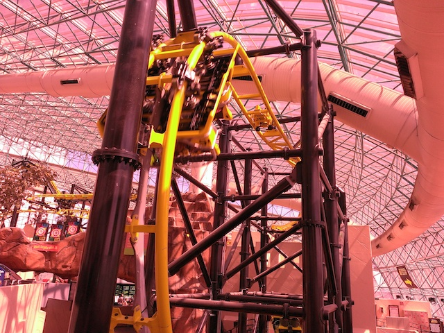

| |
El Loco Review

Today, we'll be heading over to the Adventuredome in the Circus Circus Hotel & Casino where we'll be reviewing one of the coolest indoor coasters ever, El Loco. You hop in, pull down the lap bar. And just like that, we are out of here. We roll around a quick small little turn before we rise up the lift hill. And in the typical weirdness and quirkiness of this ride, the lifthill is while not 90 degrees, but its pretty damn steep. I'd guess maybe around like 65 degrees. Then after climbing for a little bit, we reach the top, roll down a small dip before doing a funky turn. The funky turn may not be scary, but we know what its leading us to. The first drop. Now unlike all the normal El Locos, they had to slightly change the layout so that it'd fit in the Adventuredome. But I totally prefer this over Steel Hawg. Maybe that's just because of the lap bars, but I definetly prefer this one. As such, the first drop isn't 111 degrees, it's only 90 degrees. So yeah. It's not beyond vertical, it's just vertical. But there is an advantage here. NO TRIMS!!! Yeah. You just roll around the turn and head on down the first drop. And that lack of trims actually really make a difference. You just get YANKED on down. EJECTOR AIR!!! We gain speed, and yeah. We're flying now. We then rise up a really steep hill with a tight twist in there. It's a lot of fun and has some cool twisting. You then go through some mid course brakes. Its a bummer that we lost a lot of our speed, but as you'll soon find out, EL Loco isn't so much about speed as it is about doing odd and strange things that most coasters will not do. And with that said, its time for the outward banked turn. The outward banked turn is mostly just odd as you go through it. Its not uncomfortable, but it is really funny as you go through it. You get this feeling of falling out due to banking the wrong way. And I just love that. After the outward banked turn, we bank inwards like we normally do, except instead of going rightside up after the turn, we just go all the way and are now upsidedown for a few seconds. This provides us with a half loop that gives us our speed back. And that, is how you properly do the twist and dive inversion. Pay attention Manhatten Express because you really need to take notes on this. No excuses!! This coaster is literally just right down the Strip!!! The transition upsidedown was beautiful. Not clunky with headbanging. It just rolled into the inversion. Yeah, it certainly doesn't look natural and it just seems wrong, freaky, and f*cked up with a curve. And maybe if it had OTSRs, we'd have some headbanging. But we only have lap bars, and it's smooth as glass. You could really apreeciate the hangtime without upsidedown shuffling, and the loop out was smooth, and not clunky. El Loco gets an A for its Twist and Dive and Manhatten Express gets an F. GO BACK AND TRY AGAIN!!!!!!! We then rise up a small hill that manages to give us a nice pop of ejector air, a nice surprise for this ride before going into another set of harsh trims. But like I said, its about hanging and twisting in odd ways. Not speed. We go around this funky 90 degree banking, only to bank in the other direction. Just banking until we eventually go upsidedown. Yep. We have another Twist and Dive here since there's no inclined inline twist here. We get some really cool hangtime before we drop down. But yeah. We don't gain speed as just like on Full Throttle, the drop is also the brake run to save room. So that's a bummer. But enough of that. El Loco is a very interesting and very fun coaster. While it looks like something a high schooler doodled on their desk, it flows very well and the odd elements that you'd think wouldn't work and hurt flow very smoothly with no pain. Making this a very fun and very enjoyable coaster. Easily the best coaster in Nevada and definetly something for you to check out when visiting Las Vegas.
8/10
Location: Adventuredome
Opened: 2014
Built by: S&S Power
Last Ridden: May 28, 2015
El Loco Photos



|